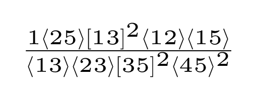

antares-results
pp → ttH
pp → Vjj
pp → jjj
ggggg
uubddbg
uubggg
mhv
coeff_0
coeff_1
coeff_10
coeff_100
coeff_101
coeff_102
coeff_103
coeff_104
coeff_105
coeff_106
coeff_107
coeff_108
coeff_109
coeff_11
coeff_110
coeff_111
coeff_112
coeff_113
coeff_114
coeff_115
coeff_116
coeff_117
coeff_118
coeff_119
coeff_12
coeff_120
coeff_121
coeff_122
coeff_123
coeff_124
coeff_125
coeff_126
coeff_127
coeff_128
coeff_129
coeff_13
coeff_130
coeff_131
coeff_132
coeff_133
coeff_134
coeff_135
coeff_136
coeff_137
coeff_138
coeff_139
coeff_14
coeff_140
coeff_141
coeff_142
coeff_143
coeff_144
coeff_145
coeff_146
coeff_147
coeff_148
coeff_149
coeff_15
coeff_150
coeff_151
coeff_152
coeff_153
coeff_154
coeff_155
coeff_156
coeff_157
coeff_158
coeff_159
coeff_16
coeff_160
coeff_161
coeff_162
coeff_163
coeff_164
coeff_165
coeff_166
coeff_167
coeff_168
coeff_169
coeff_17
coeff_170
coeff_171
coeff_172
coeff_173
coeff_174
coeff_175
coeff_176
coeff_177
coeff_178
coeff_179
coeff_18
coeff_180
coeff_181
coeff_182
coeff_183
coeff_184
coeff_185
coeff_186
coeff_187
coeff_188
coeff_189
coeff_19
coeff_190
coeff_191
coeff_192
coeff_193
coeff_194
coeff_195
coeff_196
coeff_197
coeff_198
coeff_199
coeff_2
coeff_20
coeff_200
coeff_201
coeff_202
coeff_203
coeff_204
coeff_205
coeff_206
coeff_207
coeff_208
coeff_209
coeff_21
coeff_210
coeff_211
coeff_212
coeff_213
coeff_214
coeff_215
coeff_216
coeff_217
coeff_218
coeff_219
coeff_22
coeff_220
coeff_221
coeff_222
coeff_223
coeff_224
coeff_225
coeff_226
coeff_227
coeff_228
coeff_229
coeff_23
coeff_230
coeff_231
coeff_232
coeff_233
coeff_234
coeff_235
coeff_236
coeff_237
coeff_238
coeff_239
coeff_24
coeff_240
coeff_241
coeff_242
coeff_243
coeff_244
coeff_245
coeff_246
coeff_247
coeff_248
coeff_249
coeff_25
coeff_250
coeff_251
coeff_252
coeff_253
coeff_254
coeff_255
coeff_256
coeff_257
coeff_258
coeff_259
coeff_26
coeff_260
coeff_261
coeff_262
coeff_263
coeff_264
coeff_265
coeff_266
coeff_267
coeff_268
coeff_269
coeff_27
coeff_270
coeff_271
coeff_272
coeff_273
coeff_274
coeff_275
coeff_276
coeff_277
coeff_278
coeff_279
coeff_28
coeff_280
coeff_281
coeff_282
coeff_283
coeff_284
coeff_285
coeff_286
coeff_287
coeff_288
coeff_289
coeff_29
coeff_290
coeff_291
coeff_292
coeff_293
coeff_294
coeff_295
coeff_296
coeff_297
coeff_298
coeff_299
coeff_3
coeff_30
coeff_300
coeff_301
coeff_302
coeff_303
coeff_304
coeff_305
coeff_306
coeff_307
coeff_308
coeff_309
coeff_31
coeff_310
coeff_311
coeff_312
coeff_313
coeff_314
coeff_315
coeff_316
coeff_317
coeff_318
coeff_319
coeff_32
coeff_320
coeff_321
coeff_322
coeff_323
coeff_324
coeff_325
coeff_326
coeff_327
coeff_328
coeff_329
coeff_33
coeff_330
coeff_331
coeff_332
coeff_333
coeff_334
coeff_335
coeff_336
coeff_337
coeff_338
coeff_339
coeff_34
coeff_340
coeff_341
coeff_342
coeff_343
coeff_344
coeff_345
coeff_346
coeff_347
coeff_348
coeff_349
coeff_35
coeff_350
coeff_351
coeff_352
coeff_353
coeff_354
coeff_355
coeff_356
coeff_357
coeff_358
coeff_359
coeff_36
coeff_360
coeff_361
coeff_362
coeff_363
coeff_364
coeff_365
coeff_366
coeff_367
coeff_368
coeff_369
coeff_37
coeff_370
coeff_371
coeff_372
coeff_373
coeff_374
coeff_375
coeff_376
coeff_377
coeff_378
coeff_379
coeff_38
coeff_380
coeff_381
coeff_382
coeff_383
coeff_384
coeff_385
coeff_386
coeff_387
coeff_388
coeff_389
coeff_39
coeff_390
coeff_391
coeff_392
coeff_393
coeff_394
coeff_395
coeff_396
coeff_397
coeff_398
coeff_399
coeff_4
coeff_40
coeff_400
coeff_401
coeff_402
coeff_403
coeff_404
coeff_405
coeff_406
coeff_407
coeff_408
coeff_409
coeff_41
coeff_410
coeff_411
coeff_412
coeff_413
coeff_414
coeff_415
coeff_416
coeff_417
coeff_418
coeff_419
coeff_42
coeff_420
coeff_421
coeff_422
coeff_423
coeff_424
coeff_425
coeff_426
coeff_427
coeff_428
coeff_429
coeff_43
coeff_430
coeff_431
coeff_432
coeff_433
coeff_434
coeff_435
coeff_436
coeff_437
coeff_438
coeff_439
coeff_44
coeff_440
coeff_441
coeff_442
coeff_443
coeff_444
coeff_445
coeff_446
coeff_447
coeff_448
coeff_45
coeff_46
coeff_47
coeff_48
coeff_49
coeff_5
coeff_50
coeff_51
coeff_52
coeff_53
coeff_54
coeff_55
coeff_56
coeff_57
coeff_58
coeff_59
coeff_6
coeff_60
coeff_61
coeff_62
coeff_63
coeff_64
coeff_65
coeff_66
coeff_67
coeff_68
coeff_69
coeff_7
coeff_70
coeff_71
coeff_72
coeff_73
coeff_74
coeff_75
coeff_76
coeff_77
coeff_78
coeff_79
coeff_8
coeff_80
coeff_81
coeff_82
coeff_83
coeff_84
coeff_85
coeff_86
coeff_87
coeff_88
coeff_89
coeff_9
coeff_90
coeff_91
coeff_92
coeff_93
coeff_94
coeff_95
coeff_96
coeff_97
coeff_98
coeff_99
single_minus
pp → jjjj
pp → ttH
pp → γγγ
amplitudes
antares-results
pp → jjj
uubggg
mhv
coeff_311
View page source
coeff_311

{kind=link}